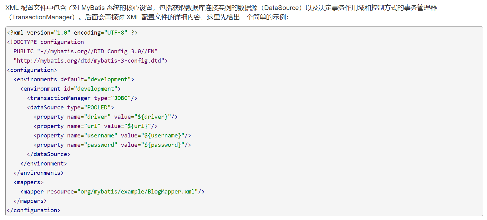
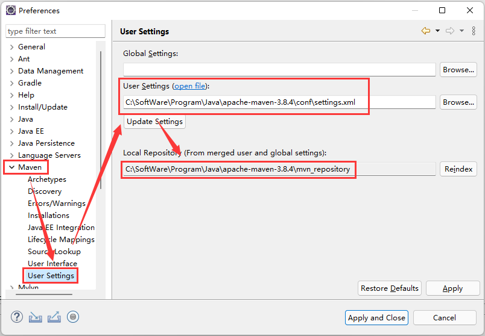

数据持久化框架-MyBatis
数据持久化框架-MyBatis一、Mybatis简介1、Mybatis概念2、Mybatis的历史3、使用Mybatis简化JDBC的原因二、Mybatis快速入门1、创建数据库2、创建动态web项目三、代码优化1、解决SQL语句执行“硬编码”问题2、解决返回值类型需要全限定名的问题3、解决数据表字段名和实体类属性名不一致的情况4、解决配置文件位置问题5、解决加载核心配置文件代码重复编写的问题四、MyBatis标准模板五、XML映射与动态SQL1、XML映射2、动态SQL3、参数传递六、MyBatis日志1、创建日志文件2、在核心配置文件中直接配置七、新增、修改业务动态获取下拉框数据1、新增业务从数据库动态获取下拉框数据2、修改业务从数据库动态获取下拉框数据八、Maven安装与使用1、Maven简介1.1 Maven概念1.2 Maven的作用1.3 Maven模型1.4 Maven仓库1.4.1 Maven仓库概念1.4.2 Maven仓库分类2、Maven的下载、安装、配置2.1 Mavan下载2.2 Maven安装2.3 Maven配置2.3.1 配置环境变量2.3.2 配置本地仓库及远程仓库2.3.3 在eclipse中配置Maven3、在eclipse中创建Maven项目3.1 Maven项目创建步骤3.2 创建Maven项目常见文件问题3.2.1 选择原型内容为空3.2.2 解决项目创建后报错的问题九、MyBatis Generator1、MyBatis Generator 简介2、MyBatis Generator 使用2.1 新建数据库、数据表2.2 创建项目、引入资源2.3 编写MyBatis generator配置文件2.4 运行MyBatis Generator十、MyBatis分页1、引入资源方式一：Maven项目引入方式二：直接导入jar包2、配置分页插件3、设置分页4、查看所有分页相关的信息十一、MyBatis注解开发1、基本增删改查2、自动映射器配置3、多表连接查询4、动态SQL实现5、使用场景说明十二、MyBatis缓存1、MyBatis一级缓存（默认开启）2、MyBatis二级缓存
一、Mybatis简介
1、Mybatis概念
Mybatis是一款优秀的持久层框架，用于简化JDBC开发。
Mybatis官网：https://mybatis.org/mybatis-3/
Mybatis中文官网：https://mybatis.org/mybatis-3/zh/index.html
2、Mybatis的历史
Mybatis前身是Apache的一个开源项目iBatis，2010年该项目由Apache迁移到google code，并且改名为Mybatis。2013年11月迁移到GitHub。
3、使用Mybatis简化JDBC的原因
使用JDBC的缺点：
硬编码 --- 解决方案：Mybatis使用
配置文件完成注册驱动
获取连接
SQL语句
操作繁琐 --- 解决方案：Mybatis配置之后自动完成
手动设置参数
手动封装结果集
二、Mybatis快速入门
查询教师表中的所有数据
1、创建数据库
创建数据库
teacher_db创建
teacher表，添加数据
xcreate table teacher( id int comment '教师编号', name varchar(20) not null comment '教师姓名', sex varchar(4) not null comment '教师性别', age int not null comment '教师年龄', position varchar(20) not null comment '教师职务', primary key (id));
insert into teacher values (1001,'张三','男',29,'讲师');insert into teacher values (1002,'李四','女',25,'班主任');insert into teacher values (1003,'王五','女',33,'班主任');insert into teacher values (1004,'李红','女',34,'讲师');insert into teacher values (1005,'张斯','男',28,'讲师');insert into teacher values (1006,'张慧','女',29,'班主任');insert into teacher values (1007,'刘欣','女',25,'讲师');2、创建动态web项目
导入jar包
连接数据库的jar包
MyBatis需要使用的jar包
jstl需要的jar包
创建包结构
创建package
entity包：实体类mapper包：SQL映射文件servlet包：请求、响应处理test包：测试类
创建Source Folder（源文件夹），用于存放
配置文件src/main/resources
编写实体类
在com.ynnz.entity下创建Java类：
Teacher.javaxxxxxxxxxxpackage com.ynnz.entity;public class Teacher {private int id;private String name;private String sex;private int age;private String position;public int getId() {return id;}public void setId(int id) {this.id = id;}public String getName() {return name;}public void setName(String name) {this.name = name;}public String getSex() {return sex;}public void setSex(String sex) {this.sex = sex;}public int getAge() {return age;}public void setAge(int age) {this.age = age;}public String getPosition() {return position;}public void setPosition(String position) {this.position = position;}public String toString() {return "Teacher [id=" + id + ", name=" + name + ", sex=" + sex + ", age=" + age + ", position=" + position+ "]";}}
编写Mybatis核心配置文件
在src/main/resources下新建xml文件：
mybatis-config.xml官网位置说明：
入门
xxxxxxxxxx <configuration> <environments default="development"> <environment id="development"> <transactionManager type="JDBC"/> <dataSource type="POOLED"> <!-- 数据驱动 --> <property name="driver" value="com.mysql.jdbc.Driver"/> <!-- 数据库地址 --> <property name="url" value="jdbc:mysql://localhost:3306/teacher_db?characterEncoding=utf-8&useSSL=false"/> <!-- 数据库用户名 --> <property name="username" value="root"/> <!-- 数据库密码 --> <property name="password" value="123456"/> </dataSource> </environment> </environments> <mappers> <!-- 配置SQL映射 --> <mapper resource="com/ynnz/mapper/TeacherMapper.xml"/> </mappers></configuration>编写SQL映射文件
在com.ynnz.mapper下创建xml文件：
TeacherMapper.xml官网位置说明：
入门参数说明：
namespace：命名空间，用于标记SQL映射文件id：标记SQL语句resultType：数据返回值类型
xxxxxxxxxx <mapper namespace="test"> <select id="selectAll" resultType="com.ynnz.entity.Teacher"> select * from teacher </select></mapper>加载核心配置文件
官网位置说明：
入门方式一：在
控制台输出在com.ynnz.test下创建测试类：
TeacherTest.javaxxxxxxxxxxpackage com.ynnz;import org.apache.ibatis.io.Resources;import org.apache.ibatis.session.SqlSession;import org.apache.ibatis.session.SqlSessionFactory;import org.apache.ibatis.session.SqlSessionFactoryBuilder;import java.io.IOException;import java.io.InputStream;import java.util.List;public class MybatisTest {public static void main(String[] args) throws IOException {// 设置核心配置文件mybatis-config.xml的路径String resource = "mybatis-config.xml";// 使用io流读取核心配置文件的内容InputStream inputStream = Resources.getResourceAsStream(resource);// 将读取到的内容交给sqlSessionFactory对象统一管理SqlSessionFactory sqlSessionFactory = new SqlSessionFactoryBuilder().build(inputStream);// 创建sqlSession对象来执行具体的SQL语句SqlSession sqlSession = sqlSessionFactory.openSession();// 执行SQL语句List<Teacher> list = sqlSession.selectList("test.queryTea");System.out.println(list);// 关闭资源sqlSession.close();}}方式二：将数据显示在
网页中技术分析：
JavaBean + JSP + Servlet + MyBatis创建查询数据的servlet：
QueryTeachers.javaxxxxxxxxxxpackage com.ynnz.servlet;import java.io.IOException;import java.io.InputStream;import java.util.List;import javax.servlet.ServletException;import javax.servlet.annotation.WebServlet;import javax.servlet.http.HttpServlet;import javax.servlet.http.HttpServletRequest;import javax.servlet.http.HttpServletResponse;import org.apache.ibatis.io.Resources;import org.apache.ibatis.session.SqlSession;import org.apache.ibatis.session.SqlSessionFactory;import org.apache.ibatis.session.SqlSessionFactoryBuilder;import com.ynnz.entity.Teacher;("/queryTeachers")public class QueryTeachers extends HttpServlet {protected void doGet(HttpServletRequest request, HttpServletResponse response) throws ServletException, IOException {doPost(request, response);}protected void doPost(HttpServletRequest request, HttpServletResponse response) throws ServletException, IOException {// 设置核心配置文件mybatis-config.xml的路径String resource = "com/ynnz/config/mybatis-config.xml";// 使用io流读取核心配置文件的内容InputStream inputStream = Resources.getResourceAsStream(resource);// 将读取到的内容交给sqlSessionFactory对象统一管理SqlSessionFactory sqlSessionFactory = new SqlSessionFactoryBuilder().build(inputStream);// 创建sqlSession对象来执行具体的SQL语句SqlSession sqlSession = sqlSessionFactory.openSession();// 执行SQL语句List<Teacher> list = sqlSession.selectList("test.queryTea");// 打包--发送request.setAttribute("list", list);request.getRequestDispatcher("main.jsp").forward(request, response);// 关闭资源sqlSession.close();}}创建主界面main.jsp,并遍历数据显示在主界面
xxxxxxxxxx<% page language="java" contentType="text/html; charset=UTF-8"pageEncoding="UTF-8"%><% prefix="c" uri="http://java.sun.com/jsp/jstl/core"%><html><head><meta charset="UTF-8"><title></title><link rel="stylesheet" type="text/css" href="bootstrap-3.4.1/css/bootstrap.min.css"/><style type="text/css">.body{width: 1200px;margin: 0 auto;}h1,td,th{text-align: center;}</style></head><body><div class="body"><h1>教师信息管理</h1><form class="form-inline" action="queryTeachers" method="post"><div class="form-group"><label for="exampleInputName2">教师姓名：</label><input type="text" class="form-control" name="tname"></div><button type="submit" class="btn btn-warning">搜索</button></form><br><table class="table table-hover"><tr><th width="20%">工号</th><th width="15%">姓名</th><th width="15%">性别</th><th width="15%">年龄</th><th width="15%">职务</th><th width="20%">操作</th></tr><c:forEach items="${list }" var="tea"><tr><td>${tea.id }</td><td>${tea.name }</td><td>${tea.sex }</td><td>${tea.age }</td><td>${tea.position }</td><td><a href="">修改</a> | <a href="deleteTeacher?tid=${tea.id }">删除</a></td></tr></c:forEach></table></div></body></html>
三、代码优化
1、解决SQL语句执行“硬编码”问题
需要手动输入SQL语句路径，操作过程中很容易写错。
【解决方案】
官网位置说明：入门
创建接口
接口名必须和SQL映射文件名保持一致创建接口和SQL映射文件的联系
namespace：标记SQL映射文件对应的接口全路径
id：对应接口中定义的方法名
resultType：数据的返回值类型创建接口对象，使用接口对象调用对应方法执行SQL语句
使用sqlSession对象的
getMapper(接口名.class)创建接口对象
在com.ynnz.mapper中创建接口
TeacherMapper.javaxxxxxxxxxxpackage com.ynnz.mapper;import java.util.List;import com.ynnz.entity.Teacher;/*** 接口：制定标准和规范*/public interface TeacherMapper {/*** 查询所有教师信息*/public abstract List<Teacher> queryTeachers();}修改com.ynnz.mapper中的SQL映射文件
TeacherMapper.xmlxxxxxxxxxx<!--namespace：标记SQL映射文件对应的接口全路径id：对应接口中定义的方法名resultType：数据的返回值类型--><mapper namespace="com.ynnz.mapper.TeacherMapper"><select id="queryTeachers" resultType="com.ynnz.entity.Teacher">select * from teacher</select></mapper>创建接口对象，使用接口对象调用方法执行SQL语句
xxxxxxxxxxpackage com.ynnz.servlet;import java.io.IOException;import java.io.InputStream;import java.util.List;import javax.servlet.ServletException;import javax.servlet.annotation.WebServlet;import javax.servlet.http.HttpServlet;import javax.servlet.http.HttpServletRequest;import javax.servlet.http.HttpServletResponse;import org.apache.ibatis.io.Resources;import org.apache.ibatis.session.SqlSession;import org.apache.ibatis.session.SqlSessionFactory;import org.apache.ibatis.session.SqlSessionFactoryBuilder;import com.ynnz.entity.Teacher;import com.ynnz.mapper.TeacherMapper;("/queryTeachers")public class QueryTeachers extends HttpServlet {protected void doGet(HttpServletRequest request, HttpServletResponse response) throws ServletException, IOException {doPost(request, response);}protected void doPost(HttpServletRequest request, HttpServletResponse response) throws ServletException, IOException {String resource = "mybatis-config.xml";InputStream inputStream = Resources.getResourceAsStream(resource);SqlSessionFactory sqlSessionFactory = new SqlSessionFactoryBuilder().build(inputStream);// 创建sqlSession对象执行SQL语句SqlSession sqlSession = sqlSessionFactory.openSession();// List<Teacher> list = sqlSession.selectList("test.queryTeachers");// 创建接口的对象,使用接口对象调用方法执行SQL语句TeacherMapper mapper = sqlSession.getMapper(TeacherMapper.class);List<Teacher> list = mapper.queryTeachers();// 打包 -- 发送request.setAttribute("list", list);request.getRequestDispatcher("main.jsp").forward(request, response);// 关闭资源sqlSession.close();}}
2、解决返回值类型需要全限定名的问题
使用全限定名比较麻烦，不够简洁。
【解决方案】
官网位置说明：XML配置 --- 类型别名
解决这个问题，可以使用
设置类型别名和包扫描两种方法，较为方便的为包扫描。
在核心配置文件
mybatis-config.xml中设置实体类的包扫描。类似的，SQL映射文件也可以设置包扫描。设置自动包扫描之后，数据返回值类型就不用写全限定名，直接写类名即可。新的SQL映射文件也不需要单独设置，MyBatis会自动扫描包，找到包里面对应的文件。
3、解决数据表字段名和实体类属性名不一致的情况
在MyBatis中，编写好SQL映射文件，MyBatis会自动获取数据，但前提是：数据表字段名和实体类属性名保持一致。否则会导致数据无法获取
【解决方案】
官网位置说明：XML配置 --- 处理枚举类型
使用自动映射器将数据表字段名和实体类属性名进行绑定，
<resultMap>相关参数说明：
type：进行绑定的数据类型
id：自动映射器标识
<id>：主键绑定标识
column：列（字段名）
property：实体类属性名
<result>：除主键外的其他字段绑定标识
修改
TeacherMapper.xml的内容：xxxxxxxxxx<?xml version="1.0" encoding="UTF-8" ?><!DOCTYPE mapperPUBLIC "-//mybatis.org//DTD Mapper 3.0//EN""http://mybatis.org/dtd/mybatis-3-mapper.dtd"><mapper namespace="com.ynnz.mapper.TeacherMapper"><resultMap type="Teacher" id="teacherMap"><id column="t_id" property="id"/><result column="t_name" property="name"/></resultMap><select id="queryTeachers" resultMap="teacherMap">select * from teacher</select></mapper>
4、解决配置文件位置问题
在实际开发中，Java类和配置文件应该分开存放，便于项目的管理，所以com.ynnz.mapper下的接口文件和SQL映射文件按照规范应该分开存放，接口文件存放在
java中，SQL映射的配置文件存放在resources中。在MyBatis中，对接口和SQL映射文件的基本要求是：（1）接口和SQL映射文件必须在同一个目录下；（2）接口名和SQL映射文件名必须保持一致。
【解决方案】
在resources创建文件夹com/ynnz/mapper用于存放SQL映射文件，这样就可以保证接口和SQL映射文件在同一个目录下。
5、解决加载核心配置文件代码重复编写的问题
在进行数据操作的过程中，进行增删改查操作时均需要加载核心配置文件，进而获取
sqlSession对象。当出现相同的代码需要重复编写时，我们可以将共同的代码提取出来放在同一个方法中，需要使用的时候直接调用即可。
创建工具类
MyBatisUtils.java创建方法
getSqlSession()加载核心配置文件，获取SqlSession对象
xxxxxxxxxxpackage com.ynnz.utils;
import java.io.IOException;import java.io.InputStream;
import org.apache.ibatis.io.Resources;import org.apache.ibatis.session.SqlSession;import org.apache.ibatis.session.SqlSessionFactory;import org.apache.ibatis.session.SqlSessionFactoryBuilder;
public class MyBatisUtils { /** * 编写加载核心配置文件，获取sqlSession对象的方法 */ public static SqlSession getSqlSession() throws IOException { String resource = "mybatis-config.xml"; InputStream inputStream = Resources.getResourceAsStream(resource); SqlSessionFactory sqlSessionFactory = new SqlSessionFactoryBuilder().build(inputStream); // 获取sqlSession对象并返回 return sqlSessionFactory.openSession(); }}四、MyBatis标准模板
以教师信息管理为例：
实体类Teacher.java
Mybatis有自动封装数据机制，在实体类中如果需要多个构造方法，必须要加上
无参构造方法，否则Mybatis无法创建对象来封装数据。加载核心配置文件的工具类
MyBatisUtils.java
xxxxxxxxxxpackage com.ynnz.utils;
import java.io.IOException;import java.io.InputStream;
import org.apache.ibatis.io.Resources;import org.apache.ibatis.session.SqlSession;import org.apache.ibatis.session.SqlSessionFactory;import org.apache.ibatis.session.SqlSessionFactoryBuilder;
public class MyBatisUtils { /** * 编写加载核心配置文件，获取sqlSession对象的方法 */ public static SqlSession getSqlSession() throws IOException { String resource = "mybatis-config.xml"; InputStream inputStream = Resources.getResourceAsStream(resource); SqlSessionFactory sqlSessionFactory = new SqlSessionFactoryBuilder().build(inputStream); // 获取sqlSession对象并返回 return sqlSessionFactory.openSession(); }}MyBatis核心配置文件
mybatis-config.xmlxxxxxxxxxx<configuration><typeAliases><!-- 自动包扫描（实体类） --><package name="com.ynnz.entity"/></typeAliases><environments default="development"><environment id="development"><transactionManager type="JDBC"/><dataSource type="POOLED"><property name="driver" value="com.mysql.jdbc.Driver"/><property name="url" value="jdbc:mysql://localhost:3306/teacher_db?characterEncoding=utf-8&useSSL=false"/><property name="username" value="root"/><property name="password" value="123456"/></dataSource></environment></environments><mappers><!-- 自动包扫描（QL映射文件路径） --><package name="com.ynnz.mapper"/></mappers></configuration>教师信息管理接口
TeacherMapper.javaxxxxxxxxxxpackage com.ynnz.mapper;import java.util.List;import com.ynnz.entity.Teacher;/*** 接口：制定标准和规范*/public interface TeacherMapper {/*** 查询所有教师信息*/public abstract List<Teacher> queryTeachers();}SQL映射文件
TeacherMapper.xmlxxxxxxxxxx<mapper namespace="com.ynnz.mapper.TeacherMapper"><!-- 自动映射器（字段名和属性名绑定） --><resultMap type="Teacher" id="teacherMap"><id column="t_id" property="id"/><result column="t_name" property="name"/></resultMap><select id="queryTeachers" resultMap="teacherMap">select * from teacher</select></mapper>加载核心配置文件，并执行SQL语句 --- 以
QueryTeachers.java为例xxxxxxxxxxpackage com.ynnz.servlet;import java.io.IOException;import java.util.List;import com.ynnz.entity.Teacher;import com.ynnz.utils.MyBatisUtils;import com.ynnz.mapper.TeacherMapperimport javax.servlet.ServletException;import javax.servlet.annotation.WebServlet;import javax.servlet.http.HttpServlet;import javax.servlet.http.HttpServletRequest;import javax.servlet.http.HttpServletResponse;import org.apache.ibatis.session.SqlSession;import com.ynnz.entity.Teacher;import com.ynnz.mapper.TeacherMapper;("/queryTeachers")public class QueryTeachers extends HttpServlet {protected void doGet(HttpServletRequest request, HttpServletResponse response) throws ServletException, IOException {doPost(request, response);}protected void doPost(HttpServletRequest request, HttpServletResponse response) throws ServletException, IOException {// 创建sqlSession对象SqlSession sqlSession = MyBatisUtils.getSqlSession();// 使用sqlSession对象创建接口的对象TeacherMapper mapper = sqlSession.getMapper(TeacherMapper.class);// 使用接口对象调用接口方法执行SQL语句List<Teacher> list = mapper.queryTeachers();// 打包 -- 发送request.setAttribute("list", list);request.getRequestDispatcher("main.jsp").forward(request, response);// 关闭资源sqlSession.close();}}
五、XML映射与动态SQL
1、XML映射
官网位置：XML映射文件 -- XML映射器
MyBatis有强大的语句映射，相对原始的JDBC来说，我们可以省掉绝大部分的代码，可以大大节约开发成本，让用户更加专注于SQL语句。SQL映射文件常用的几个顶级元素：
<resultMap>：描述如何从数据库结果集中加载对象，主要用来设置数据表字段名和实体类属性名的映射关系
属性：
id：自动映射器的标记
type：设置映射的实体类类型
子元素：
<id>：设置主键字段与实体类属性的映射关系
<result>：设置非主键字段与实体类属性的映射关系
column：数据表字段名
property：实体类属性名
<association>：多表连接查询时，用来设置主实体类所引用的实体类的属性和数据表字段的映射关系
column：数据表字段名
property：实体类属性名
<insert>：映射插入语句
<delete>：映射删除语句
<update>：映射修改语句在
<insert>、<delete>、<update>中，主要的属性是：id，主要用来设置SQL语句所关联的接口中的方法名。
<select>：映射查询语句
id：设置SQL语句所关联的接口中的方法名
resultType：未设置自动映射器时，用来标识查询到的数据的类型
resultMap：设置自动映射器时使用，用来标记自动映射器的id
2、动态SQL
官网位置：动态SQL -- 动态SQL
在使用原始的JDBC时，当进行多条件查询时，需要根据不同的条件进行SQL语句的拼接，实现起来比较麻烦，也很容易出错。为了解决这个问题，MyBatis提供了强大的动态SQL实现，我们只需要加上简单的标签，MyBatis会自动帮我们实现各种判断。常用的标签有：
<where>：进行SQL条件判断时，自动判断逻辑运算符是否需要使用
<if>：进行条件判断
<foreach>：进行元素遍历
3、参数传递
在接口和SQL映射文件的关联中，需要涉及到参数的传递，为确保参数的准确传递，需要在接口方法中对参数进行标记：使用注解
@Param()实现从接口方法中传递过来的参数，在SQL映射文件中使用
#{}进行参数获取，相当于JDBC中的?占位符
六、MyBatis日志
1、创建日志文件
引入jar包
方式一：创建日志文件
logback.xmlxxxxxxxxxx<configuration><!--CONSOLE ：表示当前的日志信息是可以输出到控制台的。--><appender name="Console" class="ch.qos.logback.core.ConsoleAppender"><encoder><pattern>[%level] %blue(%d{HH:mm:ss.SSS}) %cyan([%thread]) %boldGreen(%logger{15}) - %msg %n</pattern></encoder></appender><logger level="DEBUG" additivity="false"><appender-ref ref="Console"/></logger><!--level:用来设置打印级别，大小写无关：TRACE, DEBUG, INFO, WARN, ERROR, ALL 和 OFF， 默认debug<root>可以包含零个或多个<appender-ref>元素，标识这个输出位置将会被本日志级别控制。--><root level="DEBUG"><appender-ref ref="Console"/></root></configuration>方式二：配置日志文件
logback.propertiesxxxxxxxxxx# 全局配置log4.rootLogger = ERROR , stdout# 用来设置打印级别log4j.logger.jack.mybatis.simple.mapper = TRACE# 设置控制台打印log4j.appender.stdout = org.apache.log4j.ConsoleAppenderlog4j.appender.stdout.layout = org.apache.log4j.PatternLayoutlog4j.appender.stdout.layout.ConversionPattern = %5p [%t] - %m%n
2、在核心配置文件中直接配置
注意：放在配置文件的最前面
xxxxxxxxxx<settings> <setting name="cacheEnabled" value="true" /> <setting name="useGeneratedKeys" value="true" /> <setting name="defaultExecutorType" value="REUSE" /> <setting name="logImpl" value="STDOUT_LOGGING" /></settings>七、新增、修改业务动态获取下拉框数据
1、新增业务从数据库动态获取下拉框数据
功能场景：在新增班级信息时，从数据库动态获取专业信息
xxxxxxxxxx<div class="form-group"> <label>所属专业</label> <select class="form-control" name="className"> <!-- 使用遍历获取数据 --> <c:forEach items="${list }" var="major"> <option value="${major.majorId }">${major.majorName }</option> </c:forEach> </select></div>2、修改业务从数据库动态获取下拉框数据
功能场景：在修改班级信息时，从数据库动态获取专业信息，并默认选中班级所属专业原先的值
xxxxxxxxxx<div class="form-group"> <label>所属专业</label> <select class="form-control" name="majorName"> <!-- 获取专业信息 --> <% List<Major> listMajor = (List<Major>)request.getAttribute("listMajor"); %> <!-- 判断：默认选中获取到的专业信息 --> <c:forEach begin="0" end="${listMajor.size()-1 }" var="i" step="1"> <c:if test="${cl.majorId == listMajor.get(i).majorId }"> <option selected="selected">${listMajor.get(i).majorName}</option> </c:if> <c:if test="${cl.majorId != listMajor.get(i).majorId }"> <option>${listMajor.get(i).majorName}</option> </c:if> </c:forEach>
</select></div>八、Maven安装与使用
1、Maven简介
1.1 Maven概念
Apache Maven是一个项目管理合构建工具，它基于项目对象模型（POM）的概念，通过一小段描述信息来管理项目的构建、报告和文档。
Maven官网：https://maven.apache.org/
1.2 Maven的作用
标准化的项目结构
不同的IDE之间，项目结构不一样，不通用。
Maven提供了一套标准化的项目结构，所有IDE使用Maven构建的项目结构完全一样，不同的IDE之间可以通用。
标准化的项目构建
Maven提供了一套简单的命令来构建项目。
方便的依赖管理
依赖管理就是管理项目所依赖的第三方资源（jar包、插件等）。
原生的依赖管理：
Maven提供的依赖管理：
Maven使用标准的坐标配置来管理各种依赖
1.3 Maven模型
1.4 Maven仓库
Maven仓库依赖信息查询网站：https://mvnrepository.com/
1.4.1 Maven仓库概念
Maven仓库是项目中依赖的第三方库，这个库所在的位置叫做仓库。
1.4.2 Maven仓库分类
中央仓库（Central Repository）
由Maven团队维护的全球唯一仓库，地址：https://repo1.maven.org/maven2/
本地仓库（Local Repository）
自己计算机上的一个目录
远程仓库【私服】（Remote Repository）
由公司或团队搭建的私有仓库
仓库的访问顺序：本地仓库 --- 远程仓库 --- 中央仓库
2、Maven的下载、安装、配置
2.1 Mavan下载
2.2 Maven安装
将压缩包进行解压即可。
2.3 Maven配置
2.3.1 配置环境变量
测试是否配置成功：
xxxxxxxxxxmvn -v
配置失败原因分析：
未配置
JAVA_HOME在用户变量和系统变量中同时配置了
JAVA_HOME和MAVEN_HOMEJDK信息使用了默认信息
解决方案：
只在系统变量中设置
JAVA_HOME和MAVEN_HOME，删除默认JDK配置信息
2.3.2 配置本地仓库及远程仓库
配置本地仓库
在计算机上新建文件夹：
mvn_repository
在
setting.xml中的<localRepository>标签中配置本地仓库的路径
默认路径为：
C:\Users\Administrator\.m2\repositoryxxxxxxxxxx<localRepository>C:\SoftWare\Program\Java\apache-maven-3.8.4\mvn_repository</localRepository>配置远程仓库
配置远程仓库的意义：中央仓库在国外，访问速度较慢；访问国内企业搭建的私服，可以提升访问速度。
配置阿里云私服：
在
setting.xml中的<mirrors>标签中配置子标签xxxxxxxxxx<mirror><id>alimaven</id><name>aliyun mavne</name><url>http://maven.aliyun.com/nexus/content/groups/public/</url><mirrorOf>central</mirrorOf></mirror>
2.3.3 在eclipse中配置Maven
配置Maven存放地址
配置Maven仓库地址

3、在eclipse中创建Maven项目
3.1 Maven项目创建步骤
3.2 创建Maven项目常见文件问题
3.2.1 选择原型内容为空
【解决方案】
在命令对话框输入如下命令下载原型信息：
xxxxxxxxxxmvn archetype:generate
3.2.2 解决项目创建后报错的问题
下载打包插件、设置jdk版本
在pom.xml中配置如下信息：
xxxxxxxxxx<plugins><plugin><!-- 下载打包插件 --><groupId>org.apache.maven.plugins</groupId><artifactId>maven-war-plugin</artifactId><version>3.3.1</version><!-- 设置JDK版本 --><configuration><source>1.8</source><target>1.8</target></configuration></plugin></plugins>

更新Maven项目

设置项目JDK，Tomcat，JDK版本等信息
九、MyBatis Generator
1、MyBatis Generator 简介
MyBatis Generator（MBG），是MyBatis代码生成器，也称MyBatis逆向工程。MyBatis Generator可以帮助开发者自动生成如下代码：
实体类文件，一个数据库表对应生成一个实体类Mapper
接口文件，数据数操作方法都在此接口中定义Mapper
XML配置文件
2、MyBatis Generator 使用
2.1 新建数据库、数据表
数据库：
jw数据表：
student
2.2 创建项目、引入资源
pom.xml
xxxxxxxxxx<project xmlns="http://maven.apache.org/POM/4.0.0" xmlns:xsi="http://www.w3.org/2001/XMLSchema-instance" xsi:schemaLocation="http://maven.apache.org/POM/4.0.0 http://maven.apache.org/maven-v4_0_0.xsd"> <modelVersion>4.0.0</modelVersion> <groupId>com.ynnz</groupId> <artifactId>generator_jw</artifactId> <packaging>war</packaging> <version>0.0.1-SNAPSHOT</version> <name>generator_jw Maven Webapp</name> <url>http://maven.apache.org</url> <dependencies> <!-- mysql-connector-java --> <dependency> <groupId>mysql</groupId> <artifactId>mysql-connector-java</artifactId> <version>5.1.38</version> </dependency> <!-- mybatis --> <dependency> <groupId>org.mybatis</groupId> <artifactId>mybatis</artifactId> <version>3.4.6</version> </dependency> <!-- generator --> <dependency> <groupId>org.mybatis.generator</groupId> <artifactId>mybatis-generator-core</artifactId> <version>1.3.7</version> </dependency> </dependencies> <build> <finalName>generator_jw</finalName> <plugins> <plugin> <!-- 下载打包插件 --> <groupId>org.apache.maven.plugins</groupId> <artifactId>maven-war-plugin</artifactId> <version>3.3.1</version> <!-- 设置JDK版本 --> <configuration> <source>1.8</source> <target>1.8</target> </configuration> </plugin> </plugins> </build></project>2.3 编写MyBatis generator配置文件

generator-config.xml
xxxxxxxxxx
<generatorConfiguration> <!-- targetRuntime：执行生成逆向工程的版本 MyBatis3Simple：生成基本的增删改查 MyBatis3：生成带条件的增删改查 --> <context id="DB2Tables" targetRuntime="MyBatis3Simple"> <!-- 注释管理 --> <commentGenerator> <!-- 是否删除所有注释 --> <property name="suppressAllComments" value="true"/> </commentGenerator>
<!-- 数据库连接 --> <jdbcConnection driverClass="com.mysql.jdbc.Driver" connectionURL="jdbc:mysql://localhost:3306/jw?characterEncoding=utf-8&useSSL=false" userId="root" password="123456"> </jdbcConnection>
<!-- JavaBean生成策略 --> <javaModelGenerator targetPackage="com.ynnz.entity" targetProject="generator_jw/src/main/java"> <!-- 是否使用子包 --> <property name="enableSubPackages" value="true" /> <!-- 是否去除字符串前后的空格 --> <property name="trimStrings" value="true" /> </javaModelGenerator>
<!-- SQL映射文件生成策略 --> <sqlMapGenerator targetPackage="com.ynnz.mapper" targetProject="generator_jw/src/main/resources"> <property name="enableSubPackages" value="true" /> </sqlMapGenerator>
<!-- 接口文件生成策略 --> <javaClientGenerator type="XMLMAPPER" targetPackage="com.ynnz.mapper" targetProject="generator_jw/src/main/java"> <property name="enableSubPackages" value="true" /> </javaClientGenerator>
<!-- 需要生成的数据库表 --> <table tableName="student" domainObjectName="Student"></table> </context></generatorConfiguration>2.4 运行MyBatis Generator
下载插件
运行代码生成器

十、MyBatis分页
1、引入资源
方式一：Maven项目引入
xxxxxxxxxx<!-- pagehelper --><dependency> <groupId>com.github.pagehelper</groupId> <artifactId>pagehelper</artifactId> <version>5.1.2</version></dependency>方式二：直接导入jar包
2、配置分页插件
在 mybatis 核心配置文件中配置如下信息：
xxxxxxxxxx<!-- 配置pagehelper拦截器 --><plugins> <plugin interceptor="com.github.pagehelper.PageInterceptor"></plugin></plugins>3、设置分页
此语句必须设置在调用查询方法获取结果之前
xxxxxxxxxxPageHelper.startPage(页码,每页条数);4、查看所有分页相关的信息
xxxxxxxxxxPageInfo<数据类型> page = new PageInfo<数据类型>(数据集合,导航分页数组长度);xxxxxxxxxxPageInfo{pageNum=1, pageSize=10, size=10, startRow=1, endRow=10, total=107, pages=11, list=Page{count=true, pageNum=1, pageSize=10, startRow=0, endRow=10, total=107, pages=11, reasonable=false, pageSizeZero=false}[com.ynnz.entity.Student@4b7edf29, com.ynnz.entity.Student@756dafa9, com.ynnz.entity.Student@65aad0cb, com.ynnz.entity.Student@2a444fb0, com.ynnz.entity.Student@17fe4a46, com.ynnz.entity.Student@ff6aff7, com.ynnz.entity.Student@3ce91a4a, com.ynnz.entity.Student@3458fba8, com.ynnz.entity.Student@51912b1f, com.ynnz.entity.Student@6b22bfcd], prePage=0, nextPage=2, isFirstPage=true, isLastPage=false, hasPreviousPage=false, hasNextPage=true, navigatePages=8, navigateFirstPage=1, navigateLastPage=8, navigatepageNums=[1, 2, 3, 4, 5, 6, 7, 8]}常用属性汇总：
pageNum ：页码
pageSize ：每页条数
total ：总条数
pages ：总页数
navigatepageNums ：导航页码数组
综合：
xxxxxxxxxx// 设置分页信息PageHelper.startPage(页码,每页条数);List<Student> stuList = mapper.queryStudents();// 具体分页，获取分页信息PageInfo<数据类型> page = new PageInfo<数据类型>(数据集合,导航分页数组长度);十一、MyBatis注解开发
1、基本增删改查
注解是用来替换SQL映射文件配置的，Mybatis提供的关于增删改查的注解分别是：
查询 ：
@Select添加 ：
@Insert修改 ：
@Update删除 ：
@Delete
案例：专业信息操作
xxxxxxxxxxpublic interface MajorMapper { // 查询所有专业信息 ("select * from tb_major") public abstract List<Major> queryMajors(); // 新增专业信息 ("insert into tb_major values(#{id},#{name})") public abstract int insertMajor(Major major); // 删除专业信息 ("delete from tb_major where m_id=#{id}") public abstract int deleteMajor(int id); // 修改专业信息 ("update tb_major set name=#{name} where m_id=#{id}") public abstract int updateMajor(Major major);}2、自动映射器配置
在配置自动映射器时，使用的注解是
@Results和@Result
xxxxxxxxxxpublic interface MajorMapper { // 查询所有专业信息 ("select * from tb_major") // 自动映射器 ({ (id = true, column = "m_id", property = "id"), (column = "name", property = "name") }) public abstract List<Major> queryMajors();}
3、多表连接查询
实体类准备
Major.javaxxxxxxxxxxpackage com.ynnz.entity;public class Major {private int id;private String name;// get、set、无参构造、全参构造、toString方法省略}Student.javaxxxxxxxxxxpublic class Student {private String id;private String name;private String sex;private int age;private int majorId;// 引用外部的Major对象private Major major;// get、set、无参构造、全参构造、toString方法省略}
接口方法准备
MajorMapper.javaxxxxxxxxxxpublic interface MajorMapper {// 根据id查询专业信息("select * from tb_major where m_id=#{id}")({(id = true,column = "m_id", property = "id"),(column = "name", property = "name")})public abstract List<Major> queryMajorById(int id);}StudentMapper.javaxxxxxxxxxxpackage com.ynnz.mapper;import java.util.List;import org.apache.ibatis.annotations.One;import org.apache.ibatis.annotations.Result;import org.apache.ibatis.annotations.Results;import org.apache.ibatis.annotations.Select;import com.ynnz.entity.Student;public interface StudentMapper {// 查询所有学生信息("select * from tb_student")({(column = "major_id", property = "majorId"),/** 配置Student和Major的映射关系* column：学生表里面和专业表关联的依据字段* property：学生类中引用专业类的属性名* one：学生表和专业表的映射关系* select：根据id查询专业信息的方法的全路径*/(column = "major_id", property = "major",one = (select = "com.ynnz.mapper.MajorMapper.queryMajorById"))})public abstract List<Student> queryStudents();}
4、动态SQL实现
动态SQL不能使用@Select、@Insert、@Update、@Delete直接拼接，需要使用如下注解实现：
@InsertProvider
@UpdateProvider
@DeleteProvider
@SelectProvider实现步骤为：
创建SQL生成器，拼接好需要的SQL语句
MajorSqlBuilder.javaxxxxxxxxxxpackage com.ynnz.utils;import org.apache.ibatis.annotations.Param;import org.apache.ibatis.jdbc.SQL;// sql生成器public class MajorSqlBuilder {// 条件查询（搜索）public static String searchBuild(("name") String name) {return new SQL() {{SELECT("*");FROM("tb_major");if(name != null) {WHERE("name like concat('%',#{name},'%')");}}}.toString();}}使用如上对应注解调用生成器中拼接好的SQL语句
xxxxxxxxxxpublic interface MajorMapper {// 查询所有专业信息(type = MajorSqlBuilder.class, method = "searchBuild")// 自动映射器({(id = true, column = "m_id", property = "id"),(column = "name", property = "name")})public abstract List<Major> queryMajors(("name") String name);}
5、使用场景说明
简单SQL语句：可以使用注解
复杂SQL语句：使用配置文件
官网关于注解的说明：
使用注解来映射简单语句会使代码显得更加简洁，但对于稍微复杂一点的语句，Java 注解不仅力不从心，还会让你本就复杂的 SQL 语句更加混乱不堪。 因此，如果你需要做一些很复杂的操作，最好用 XML 来映射语句。
选择何种方式来配置映射，以及认为是否应该要统一映射语句定义的形式，完全取决于你和你的团队。 换句话说，永远不要拘泥于一种方式，你可以很轻松的在基于注解和 XML 的语句映射方式间自由移植和切换。
十二、MyBatis缓存
缓存是指可以进行高速数据交换的存储器，它先于内存与CPU交换数据，因此速率很高。
MyBatis缓存只针对于查询
1、MyBatis一级缓存（默认开启）
MyBatis一级缓存是SqlSession级别的，通过同一个SqlSession查询的数据会被缓存，下次查询相同的数据时，就会从缓存中直接获取，不会从数据库直接访问。
xxxxxxxxxxpackage com.ynnz.test;
import java.io.IOException;import java.io.InputStream;import java.util.List;
import org.apache.ibatis.io.Resources;import org.apache.ibatis.session.SqlSession;import org.apache.ibatis.session.SqlSessionFactory;import org.apache.ibatis.session.SqlSessionFactoryBuilder;
import com.ynnz.entity.Student;import com.ynnz.mapper.StudentMapper;
public class Test { public static void main(String[] args) throws IOException { String resource = "mybatis-config.xml"; InputStream inputStream = Resources.getResourceAsStream(resource); SqlSessionFactory sqlSessionFactory = new SqlSessionFactoryBuilder().build(inputStream); SqlSession sqlSession = sqlSessionFactory.openSession(); SqlSession sqlSession1 = sqlSessionFactory.openSession(); StudentMapper mapper = sqlSession.getMapper(StudentMapper.class); List<Student> list1 = mapper.queryStudents(); System.out.println(list1); StudentMapper mapper1 = sqlSession1.getMapper(StudentMapper.class); List<Student> list2 = mapper1.queryStudents(); System.out.println(list2); }}2、MyBatis二级缓存
MyBatis二级缓存是SqlSessionFactory级别的，通过同一个SqlSessionFactory创建的SqlSession查询的数据会被缓存，下次查询相同的数据时，就会从缓存中直接获取，不会从数据库直接访问。
开启二级缓存的条件：
在核心配置文件，设置全局属性：
cacheEnabled为true，该属性默认为true，不需要设置。如果想手动设置，方法如下：xxxxxxxxxx<settings><!--开启缓存--><setting name="cacheEnabled" value="true" /></settings>在SQL映射文件中设置标签
<cache />，或者给映射接口直接添加注解@CacheNamespace实体类必须实现
序列化接口xxxxxxxxxxpublic class 实体类名 implements Serializable {}二级缓存必须在SqlSession提交或关闭之后才能有效
xxxxxxxxxx// 提交sqlSession.commit();// 关闭sqlSession.close();
xxxxxxxxxxpackage com.ynnz.test;
import java.io.IOException;import java.io.InputStream;import java.util.List;
import org.apache.ibatis.io.Resources;import org.apache.ibatis.session.SqlSession;import org.apache.ibatis.session.SqlSessionFactory;import org.apache.ibatis.session.SqlSessionFactoryBuilder;
import com.ynnz.entity.Student;import com.ynnz.mapper.StudentMapper;
public class Test { public static void main(String[] args) throws IOException { String resource = "mybatis-config.xml"; InputStream inputStream = Resources.getResourceAsStream(resource); SqlSessionFactory sqlSessionFactory = new SqlSessionFactoryBuilder().build(inputStream); SqlSession sqlSession1 = sqlSessionFactory.openSession(true); SqlSession sqlSession2 = sqlSessionFactory.openSession(true); StudentMapper mapper1 = sqlSession1.getMapper(StudentMapper.class); List<Student> list1 = mapper1.queryStudents(); System.out.println(list1); sqlSession1.close(); StudentMapper mapper2 = sqlSession2.getMapper(StudentMapper.class); List<Student> list2 = mapper2.queryStudents(); System.out.println(list2); sqlSession2.close(); }}